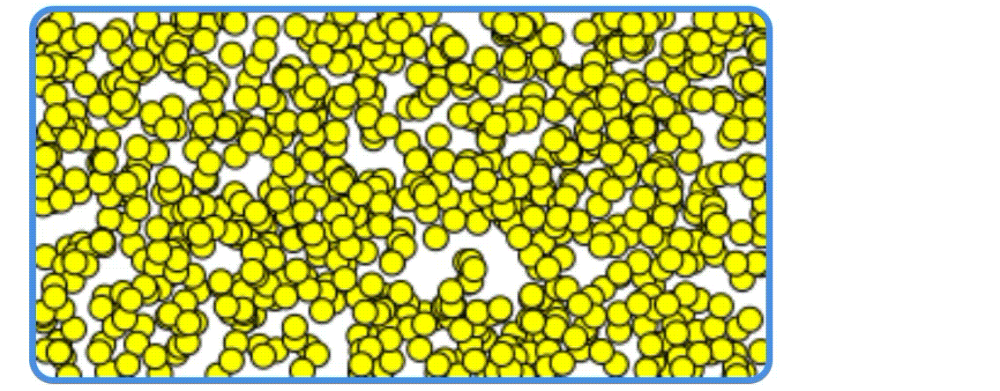
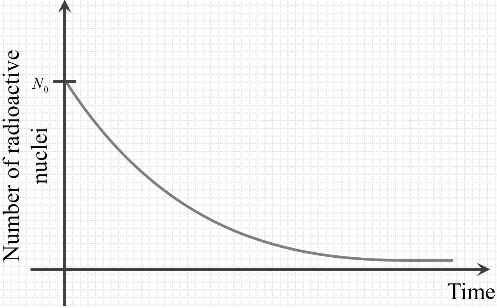
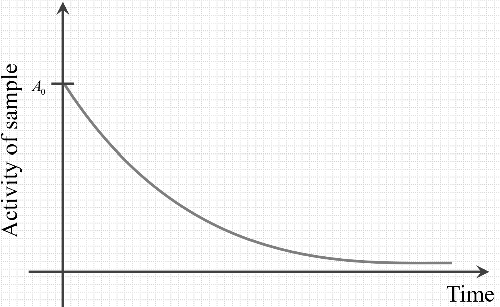
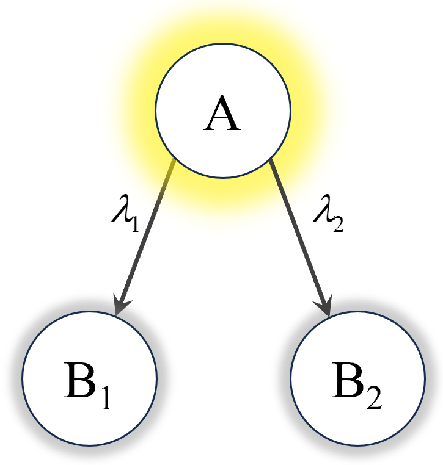
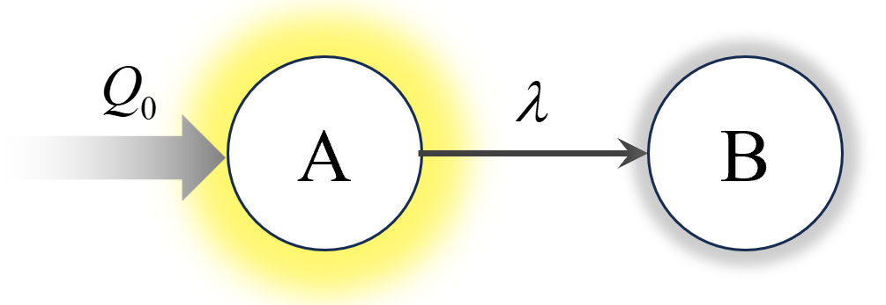
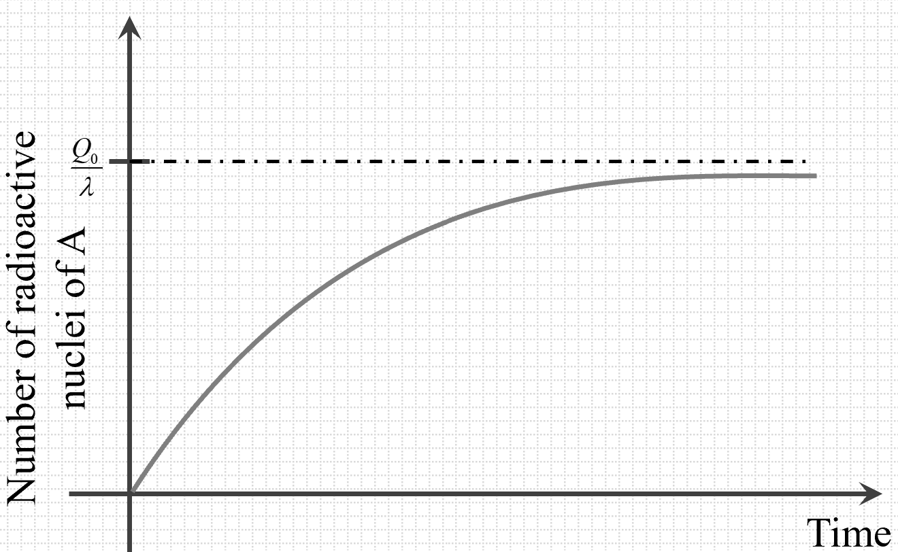
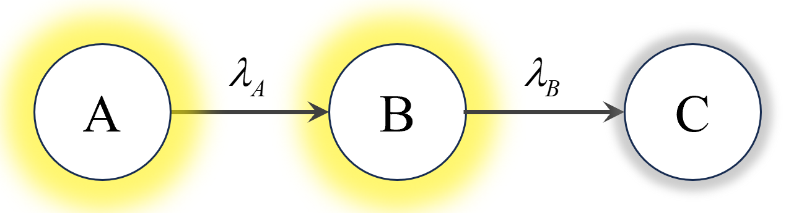
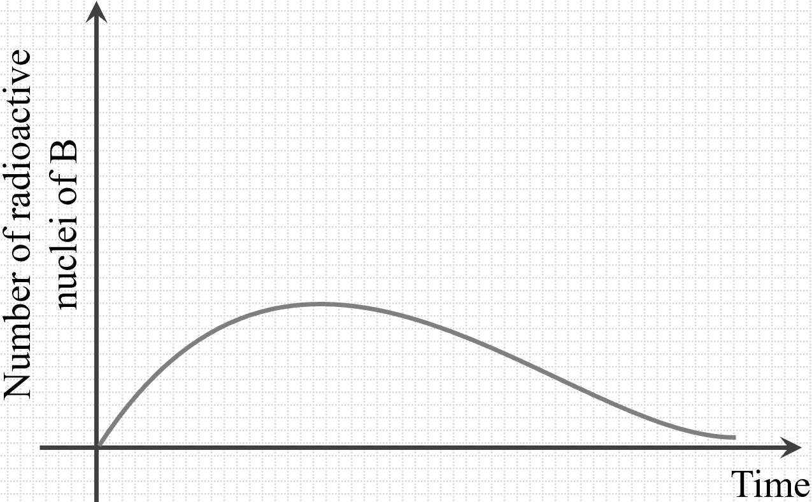

Radioactivity is a fundamental phenomenon in nuclear physics, referring to the
spontaneous emission of particles or electromagnetic radiation from the unstable
nuclei of certain atoms as they transition toward a more stable state. This
process of emission of particles by a nuclei sample in the process of achieving
stability is called radioactive decay and the sample is called radioactive
sample.
Radioactive decay is inherently random at the level of individual atoms. It is
impossible to predict exactly when a specific nucleus will decay. This
randomness is due to quantum mechanical principles governing subatomic
particles. However, when dealing with a large ensemble of nuclei, statistical
methods allow us to predict the behavior of the sample as a whole. The decay
processes follow well-defined probability distributions, enabling scientists to
determine decay rates and half-lives.
An analogy can be drawn with a large crowd of people deciding to leave a
stadium: while we cannot predict the exact moment any one person will exit, we
can estimate how long it will take for half the crowd to leave based on
statistical averages.
Activity of a radioactive sample quantifies the rate at which
nuclei in a
sample decay, providing a measure of the sample's radioactivity. The activity \(
A \) is defined as the number of disintegrations per unit time:
\(\qquad A = -\dfrac{dN}{dt} \)
Here, \( N \) is the number of undecayed nuclei at time \( t \), and the
negative sign indicates that \( N \) decreases over time. The SI unit of
activity is the Becquerel (Bq), where:
\(\qquad 1\, \text{Bq} = 1\, \text{disintegration per second (dps)} \)
For practical purposes, especially when dealing with large activities, the Curie
(Ci) is used:
The Curie is defined based on the activity of 1 gram of radium-226, which
undergoes \( 3.7 \times 10^{10} \) disintegrations per second.
The Radioactivity Law explains how the quantity of undecayed nuclei in a
radioactive sample gradually decreases over time. This decay process is governed
by a characteristic value for each isotope, known as the decay
constant \( \lambda \), which reflects the probability of decay per
unit time for any individual nucleus in the sample.
The likelihood, or probability \( P \), that a single nucleus will decay within
a short time interval \( dt \) is given by:
\(\qquad P = \lambda \, dt \)
Now, if we consider a large number of nuclei \( N \) present in the sample, we
can determine how the total number of nuclei changes over this small time
interval \( dt \). The fractional decrease in the number of nuclei, \(
\dfrac{dN}{N} \), relates to this decay probability:
\(\qquad \dfrac{dN}{N} = -P \)
Substituting \( P = \lambda \, dt \), we obtain:
\(\qquad \dfrac{dN}{N} = -\lambda \, dt \)
This leads us to the differential equation that describes radioactive decay:
\(\qquad \dfrac{dN}{dt} = -\lambda N \)
The negative sign here indicates that the number of undecayed nuclei \( N \) is
decreasing over time. This equation shows that the decay rate (the rate at which
nuclei decay) is directly proportional to the remaining number of undecayed
nuclei at any given moment. Essentially, the more nuclei present, the faster the
decay process; as nuclei decay and \( N \) decreases, the decay rate also slows
down, following an exponential pattern.
The overall statistical behavior of the radioactive decay can be understood from
following animation in which each radioactive nucleus has constant probability
of undergoing decay in a given interval:

Animation: Random nucleus decaying at
random instants
Graph: Variation of number of
radioactive nuclei
The exponential decay equation is central to understanding radioactive
processes. Starting from the fundamental decay equation:
\(\qquad \ln \left( \dfrac{N}{N_0} \right) = -\lambda t \)
Exponentiating both sides:
\(\qquad \dfrac{N}{N_0} = e^{-\lambda t} \)
Therefore:
\(\qquad N = N_0 e^{-\lambda t} \)
This equation indicates that the number of undecayed nuclei decreases
exponentially over time, as shown in graph below:

Graph: Active nuclei number variation
with time
Similarly, the activity at time \( t \) is:
\(\qquad A = -\dfrac{dN}{dt} \)
\(\Rightarrow\quad A = -\dfrac{d \lambda N_0 e^{-\lambda t} }{dt} \)
\(\Rightarrow\quad A = -\lambda N_0 e^{-\lambda t} \)
\(\Rightarrow\quad A = -A_0 e^{-\lambda t} \)
With \(A_0\) representing the initial activity of the given sample. Its
variation is similar to variation of number of active nuclei with time.

Graph: Activity variation with time
The exponential decay equations 1 and 2, derived from the fundamental decay law,
reveals several important properties that are essential to understanding
radioactive decay. Here are the key properties:
Exponential Decay Nature
Radioactive decay follows an exponential pattern, meaning the number
of undecayed nuclei continuously decreases over time, but
theoretically never reaches zero. Additionally, the rate of decrease
slows down over time, creating a characteristic decay curve that
approaches zero asymptotically.
Time Independence of Fractional Decay
The fraction of nuclei remaining after a given time interval is
independent of the initial quantity \( N_0 \). For example, if the
number of nuclei decreases to one-third of the initial amount in 10
minutes, it will further decrease to one-ninth of the initial amount
in another 10 minutes, regardless of how much you started with.
Constant Expected Completion Time
If \( A \) and \( N \) represent the instantaneous activity and
number of undecayed nuclei respectively, then the expected time of
completion, given by \( \dfrac{N}{A} \), remains constant over time
and is equal to \( \dfrac{1}{\lambda} \). This value, known as the
time constant, represents the expected time for the completion of
decay had decay rate remained constant with time.
Half-Life (\( t_{1/2} \)):
The half-life of a radioactive isotope is the time required for half of the
nuclei in a sample to decay. It is a characteristic constant for each
radioactive isotope. To derive the relationship between half-life and the decay
constant \( \lambda \), we use the exponential decay law.
At \( t = t_{1/2} \), \( N = \dfrac{N_0}{2} \). Substituting into the decay
equation:
This formula allows us to calculate the half-life if the decay constant is
known, and vice versa.
The fraction of nuclei remaining after \( x \) half-lives is:
\(\qquad N=N_0 e^{\lambda (xt_{1/2}}) \)
\(\Rightarrow\quad N=N_0 e^{ x\ln2} \)
\(\Rightarrow\quad N=N_02^{-x} \)
For example:
After 1 half-life: \( N = \dfrac{N_0}{2} \)
After 2 half-lives: \( N = \dfrac{N_0}{4} \)
After 3 half-lives: \( N = \dfrac{N_0}{8} \)
Mean Life (\( \tau \)):
Each nucleus in a sample has a different lifetime before it decays, as decay is
a probabilistic process. The mean life \( \tau \) represents the average time a
nucleus exists before decaying.
Consider a sample with an initial number of nuclei \( N \) and a decay constant
\( \lambda \).
To find the mean life, let’s analyze the decay process over time. After a time
\( t \), the number of nuclei that decay in the next small interval \( dt \) is
given by the product of the instantaneous activity and \( dt \):
\( \qquad \text{Number decaying in } dt \text{ after time } t = (\lambda N
e^{-\lambda t})
\, dt\)
For these nuclei, the lifetime is \( t \). To calculate the mean lifetime across
all decaying nuclei, we take the weighted average of their lifetimes, with \( t
\) weighted by the number of nuclei decaying at that time:
This result indicates that the average lifetime of a nucleus in a radioactive
sample is inversely proportional to the decay constant. The greater the decay
constant \( \lambda \), the shorter the mean life, and vice versa.
In radioactive decay, there can be scenarios where multiple decay
processes are possible for a single nucleus, or where nuclei are
generated or decay in sequence. Following are some types of such decay
reactions:
Parallel Decay Reactions
In parallel decay, a single radioactive nucleus can decay through
two or more different pathways simultaneously. Each path has its own
decay constant \( \lambda_i \), representing its probability of
decay per unit time.

Figure: Parallel
radioactivity
For two decay paths occurring simultaneously with individual decay
constants \(\lambda_1\) and \(\lambda_2\), occuring as shown in
diagram, the overall activity of the sample of N number of nuclei
can be written as:
\(\qquad \dfrac{dN}{dt}=-\lambda_1 N - \lambda_2 N\)
The probability that a nucleus will decay via a particular mode \( i
\) is given by the branching ratio:
\(\qquad \text{Branching Ratio for mode } i =
\dfrac{\lambda_i}{\lambda_{\text{total}}} \)
Understanding parallel decay is important in nuclear reactions where
multiple decay pathways are possible, such as in nuclear reactors or
radioactive dating.
Radioactive Generation at Constant Rate
In certain situations, radioactive nuclei are produced at a constant
rate \( Q_0 \) (nuclei per unit time), which occurs, for example, in
nuclear reactors or as a result of cosmic ray interactions. This is
schematically shown in diagram below:

Figure: Constant
formation of radioactive substance
In these scenarios, the system involves a dynamic balance where
nuclei are continuously generated and decay simultaneously.
The differential equation governing the number of radioactive nuclei
\( N \) in such a case is:
\(\qquad \dfrac{dN}{dt} = Q_0 - \lambda N \)
Here:
\( Q_0 \): Constant rate at which new radioactive nuclei are
generated.
\( \lambda N \): Rate at which existing nuclei decay,
proportional to their current number \( N \).
Qualitatively, when the system begins, \( N \) increases as the
constant rate \( Q_0 \) adds new nuclei, and the decay rate \(
\lambda N \) also increases with \( N \). This setup leads to a
point where the generation rate and decay rate balance, resulting in
a steady-state where the number of radioactive nuclei becomes
constant. A graph of \( N \) versus time would show an initial
increase that gradually levels off at this steady-state value.
To find the solution using separation of variables, we start with
the differential equation:
This solution describes how the number of radioactive nuclei \( N \)
changes over time, starting from an initial quantity \( N_0 \) and
approaching the steady-state value \( N_{\text{steady}} =
\dfrac{Q_0}{\lambda} \) as \( t \to \infty \). Such variation is
shown in the graph below:

Figure: Variation of
number of nuclei of \(B\) with constant rate of
formation
In this steady-state, the number of decaying nuclei per unit time
equals the rate at which they are generated, and \( N \) remains
constant.
Series Decay Reactions
In series decay, a parent nucleus \(A\) decays into a daughter
nucleus \(B\),
which itself may be radioactive and continue to decay through a
chain of reactions. This process results in a decay chain where each
subsequent nucleus can undergo further decay. The simplest case to
consider is a two-step decay process, as shown in diagram below:

Graph: Formation of
radioactive substance \(B\) from another radioactive
substance \(A\)
Let the number of nuclei of \(A\) and \(B\) at any general time be
represented by \(N_1\) and \(N_2\) respectively. If the
corresponding decay constants are \(\lambda_1\) and \(\lambda_2\),
the activity of each of them can be written as:
For the parent nucleus \( A \):
\(\qquad \frac{dN_1}{dt} = -\lambda_1 N_1 \)
The number of active nuclei present for \(A\) at any moment will be
independent of activity of \(B\). Therefore, variation of number of
active nuclei of \(A\) can directly be mentioned as:
\(\qquad N_1(t) = N_{1,0} e^{ -\lambda_1 t } \)
Where \( N_{1,0} \) is the initial number of parent
nuclei at \( t = 0 \).
This is a linear non-homogeneous differential equation. We can solve
it using an integrating factor, as given in following detailed
calculations:
Detailed calculations
This is the solution for \( N_2(t) \), showing how the number of
daughter nuclei changes over time due to both the decay of the
parent and the decay of the daughter nuclei themselves. This
variation is plotted in following graph:

Graph: Variation of
number of nuclei of \(B\)
Series decay reactions are significant in understanding natural
radioactive decay series, such as those in uranium and thorium decay
chains. In these chains, multiple radioactive isotopes decay
sequentially until a stable nucleus is reached. The mathematical
modeling of such decay processes is essential in fields like nuclear
physics, radiometric dating, and nuclear medicine.
Carbon dating uses the principles of radioactive decay to estimate the
age of
organic materials. This method is based on the decay of carbon-14
(\(^{14}\text{C}\)),
an isotope absorbed by living organisms throughout their lifetimes.
After death, the intake of carbon-14 ceases, and the isotope decays at a
predictable rate. By measuring the remaining \(^{14}\text{C}\) in a sample
and
applying the radioactive decay law, scientists can calculate the time
elapsed since
the organism's death.
The decay law for carbon dating helps derive the age of a sample by relating
the
remaining \(^{14}\text{C}\) to its initial quantity. Carbon dating is widely
used
in archaeology and geology, offering reliable insights into the age of
artifacts,
fossils, and other historical samples.
To illustrate the calculation method used in carbon dating, let's consider an
example:
An archaeologist discovers a wooden artifact and wants to determine
its age. The current amount of carbon-14 (\(^{14}\text{C}\)) in the wood is
measured to be 25% of the amount found in a living tree of the same type.
Knowing that the half-life of \(^{14}\text{C}\) is approximately 5,730 years, we
can calculate the age of the artifact.
Steps to Calculate the Age:
Determine the Decay Constant (\( \lambda \)):
The decay constant is related to the half-life (\( t_{1/2} \)) by the
formula:
Conclusion: The wooden artifact is approximately 11,460 years
old. This
calculation demonstrates how measuring the remaining \(^{14}\text{C}\) in an
organic sample allows scientists to estimate its age based on the known
half-life of carbon-14.
Note: This method assumes that the initial \(^{14}\text{C}\)
concentration
in the organism was the same as that in the atmosphere at the time of its death
and that the decay process has not been affected by external factors.